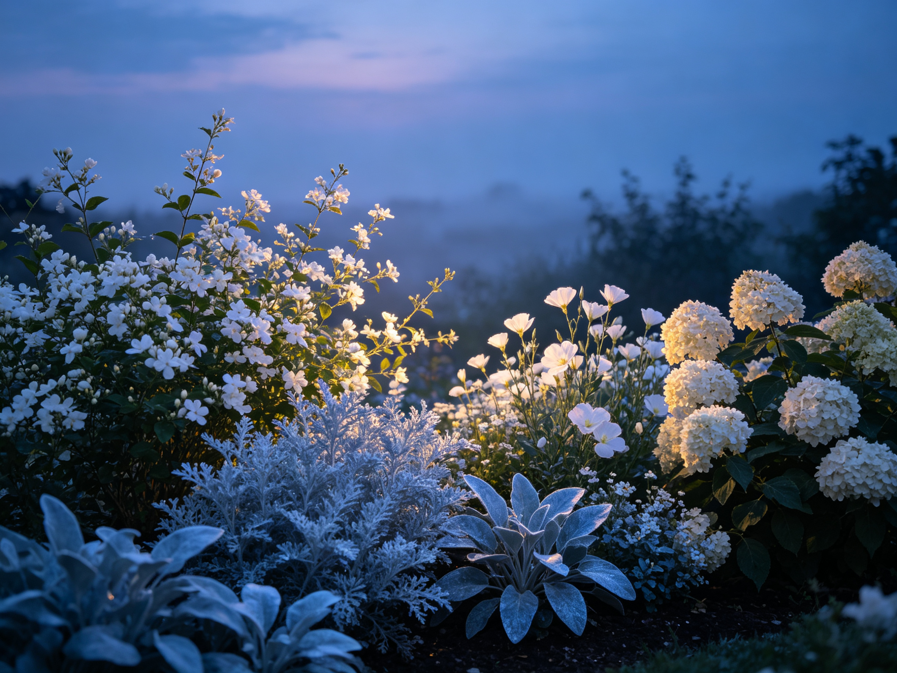

The Moon Garden: White Flowers That Glow After Dark
Most gardens are designed for midday. A moon garden is designed for the other half of the day — a bed of white and pale flowers, silver foliage, and night-scented blooms that seem to glow as the light fades. It's the most romantic, least-expected garden you can plant, and it turns your evening into a ritual.
Why White Flowers "Glow" at Night
In low light, bright white reflects whatever light remains — moonlight, porch glow, even starlight — so white blooms read as luminous against dark foliage. Pale yellows and pale blues do the same, while silver and blue-gray foliage catch the faintest light. That's the whole trick: a moon garden is built on light-reflecting colors, not bright ones.
The Best Plants for a Moon Garden
Night-blooming and white flowers
- Moonflower (Ipomoea alba) — the namesake vine, huge fragrant white blooms that open at dusk and close at dawn.
- Evening primrose (Oenothera) — cheerful pale yellow flowers that unfurl as the sun goes down.
- White jasmine — small white stars with an intoxicating evening scent.
- White nicotiana — old-fashioned tobacco flower, wonderfully fragrant at night.
- White hydrangea, Shasta daisy, and white petunia — classic glow-givers that anchor the bed.
Silver and blue-gray foliage
- Lamb's ear — soft, silver, fuzzy leaves that seem to shine in moonlight.
- Dusty miller — delicate silvery-gray, great for edging.
- Artemisia, lavender, and Russian sage — aromatic, light-catching, and drought-tough.
Designing the Bed
Place the moon garden where you'll actually be in the evening — near a patio, path, or a window you sit by at night. Cluster whites together in drifts rather than scattering them, so the glow reads as a pool of light. Use dark-foliage plants (deep green shrubs, dark basil, burgundy heucheras) as a backdrop to make the white pop. A reflective surface — pale gravel, white mulch, or a small water feature — amplifies the effect.
Planting for Success
Most moon-garden stars are easy perennials or fast annuals. Follow the basics from our easy flowers for beginners guide: full sun for most, well-drained soil, and regular water until established. Native white-flowering plants also draw pollinators at dusk — see native plants and pollinator gardens for ideas that support local wildlife while lighting up your evenings.
Keeping It Alive Through the Seasons
- Deadhead regularly — white blooms keep coming if you snip spent flowers.
- Feed lightly — a balanced fertilizer in spring keeps foliage lush.
- Divide and replant — perennials like Shasta daisy and daylilies multiply happily.
- Add structure — white tulips and lilies for spring, plus shrubs, extend the show.
A moon garden is more than a garden — it's a reason to sit outside after the sun drops, to slow down, and to notice how much a garden still has to offer once the daylight's gone.